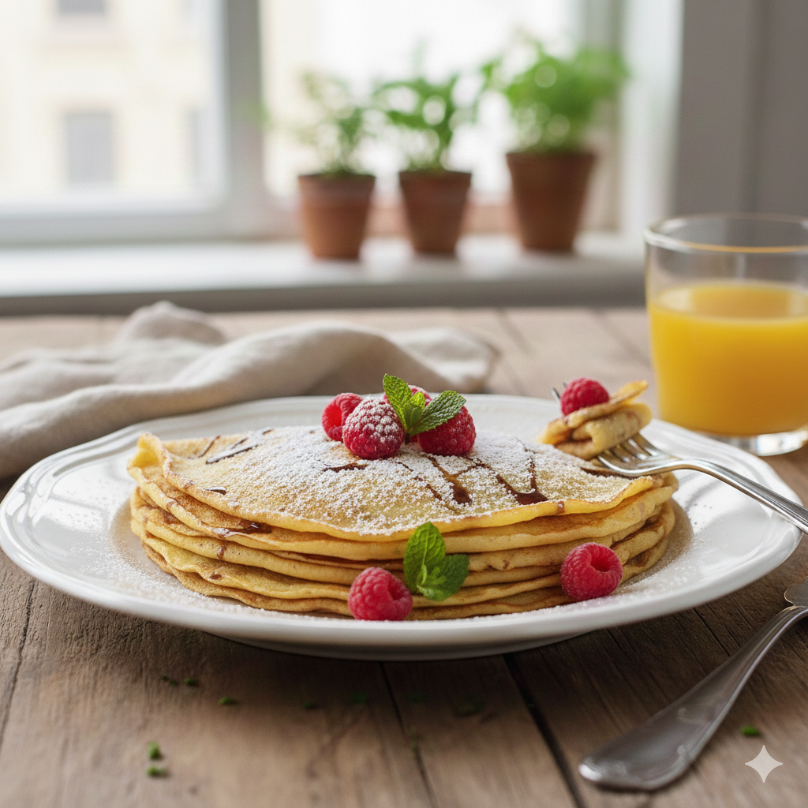

Home
🥞 Crêpes classiques : Douces et légères

Une recette simple de crêpes parfaites pour le petit-déjeuner, le goûter ou un dessert improvisé.
🌟 Informations
Temps de préparation : 10 minutes
Temps de cuisson : 20 minutes
Portions : 8-10 crêpes
🍽️ Ingrédients
- 250 g de farine
- 3 œufs
- 500 ml de lait
- 2 cuillères à soupe de sucre (pour la version sucrée)
- 1 pincée de sel
- 2 cuillères à soupe d'huile ou 30 g de beurre fondu
- Optionnel : 1 sachet de sucre vanillé ou une cuillère de rhum pour parfumer
 Crêpes classiques — à garnir selon vos envies.
Crêpes classiques — à garnir selon vos envies.
👩🍳 Préparation
- Dans un grand saladier, tamisez la farine et ajoutez le sel et le sucre (si vous faites des crêpes sucrées).
- Faites un puits, cassez les œufs au centre et commencez à mélanger en incorporant progressivement le lait
pour éviter les grumeaux.
- Ajoutez l'huile ou le beurre fondu et mélangez jusqu'à obtenir une pâte lisse et fluide. Laissez reposer 30
minutes si possible.
- Faites chauffer une poêle antiadhésive à feu moyen et graissez légèrement.
- Versez une petite louche de pâte, étalez en inclinant la poêle et faites cuire 1-2 minutes de chaque côté
jusqu'à dorure.
- Empilez les crêpes sur une assiette et servez chaudes avec sucre, confiture, chocolat fondu ou fruits.
💡 Conseils
- ✅ Pour des crêpes plus fines, ajoutez un peu plus de lait.
- ✅ Si la pâte présente des grumeaux, mixez-la rapidement ou passez-la au chinois.
- ✅ Conservez les crêpes au chaud dans un four doux (80°C) pendant que vous terminez la cuisson.
🍽️ Variantes
- Version salée : retirez le sucre, ajoutez des herbes et garnissez de fromage, jambon, œuf.
- Crêpes à la bière : remplacez une partie du lait par de la bière pour des crêpes plus légères.
- Crêpes sans lactose : utilisez du lait végétal (amande, avoine) et de la margarine.
© 2026 Odin Recipes